Gestione Ruoli e Profili
Il portale delle Smart Guide è uno spazio digitale che raccoglie risorse pratiche e aggiornate in un unico ambiente intuitivo. Strumenti chiari e organizzati per organizzarti e trovare subito ciò che ti serve.
01.
Creazione Ruolo
Una panoramica sulla creazione dei ruoli.
Punto di accesso
La voce di menù
Dalla dashboard, è possibile accedere alle principali sezioni tramite le voci di menu.
Menu a tendina
Cliccando sulla voce "Configurazioni" viene visualizzato un menu a tendina, da cui è possibile accedere a "Gestione Ruoli".
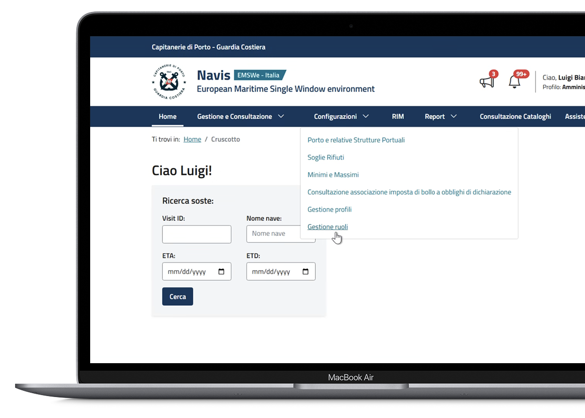
Creazione nuovo ruolo
Dopo aver effettuato l'accesso alla pagina "Configurazione Ruoli", cliccare sul pulsante "Nuovo ruolo" per avviare il flusso di creazione.
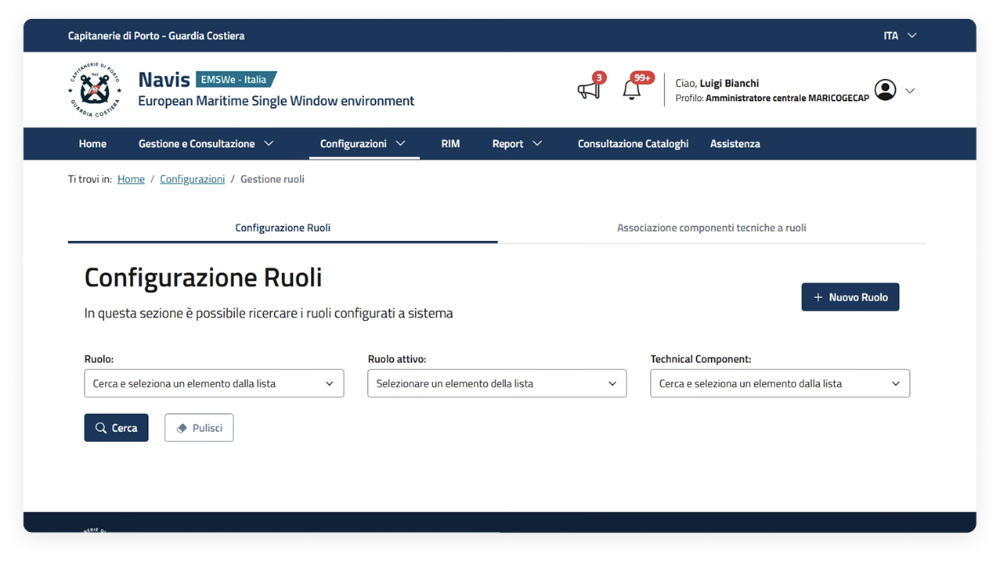
Passaggi per creare un nuovo ruolo
Dopo aver cliccato il pulsante "Nuovo ruolo", segui tutti i passaggi indicati a sistema e inserisci le informazioni necessarie per completare la creazione del nuovo ruolo.
Inserimento delle informazioni
Inserire i dati del ruolo come "Codice ruolo" e "Descrizione ruolo", indicare se il ruolo è attivo (Sì o No) e indicare se il ruolo può essere associato a Obblighi di Dichiarazione (Sì/No).
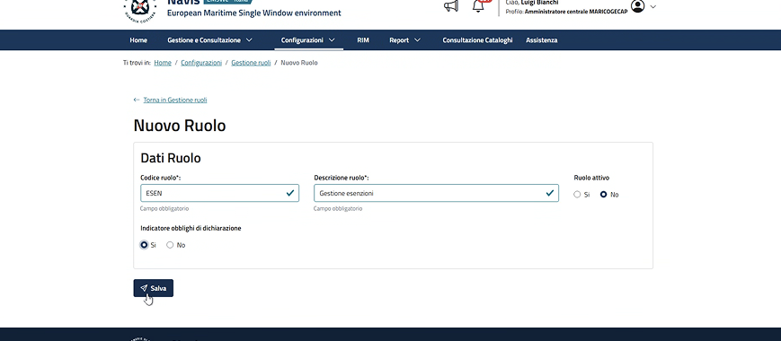
Salvataggio e conferma
Dopo aver cliccato il pulsante "Salva", il sistema mostra una finestra di conferma, chiedendo all'utente se è sicuro di confermare la creazione del ruolo. Cliccare "Conferma" per creare il ruolo. All'interno del dettaglio saranno disponibili i pulsanti di Modifica ed Elimina. Per aggiungere componenti tecniche al ruolo cliccare sul pulsante "Modifica".
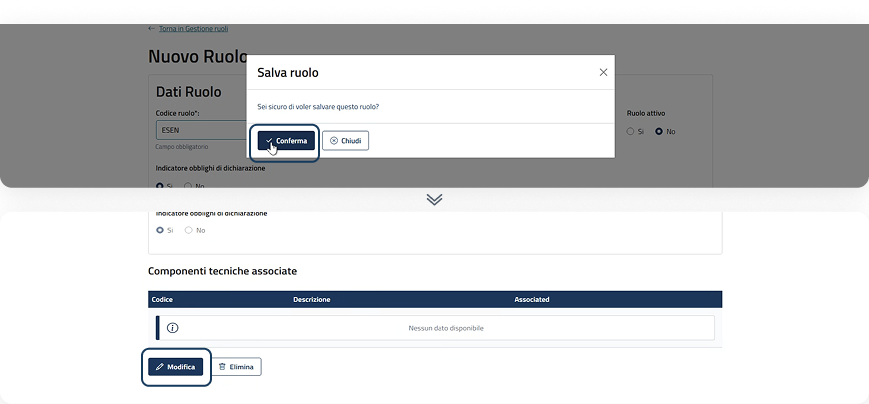
Passaggi per aggiungere componenti tecniche al ruolo
Dopo aver creato il ruolo procedi con l'associazione delle componenti tecniche, seguendo i passaggi indicati:
Aggiunta componenti tecniche
Dopo il salvataggio, per aggiungere una o più componenti tecniche al ruolo cliccare il pulsante "Aggiungi componente tecnica".
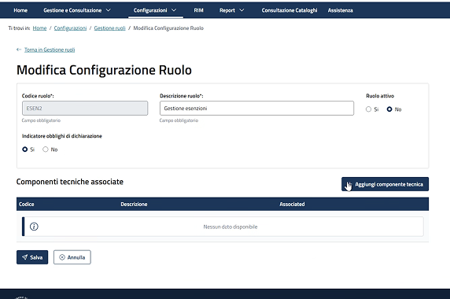
Selezione componenti tecniche
Il sistema mostra una finestra tramite la quale è possibile selezionare una o più componenti tecniche da associare al ruolo. Dopo la selezione delle stesse, cliccare il pulsante "Salva" per confermare l'associazione.
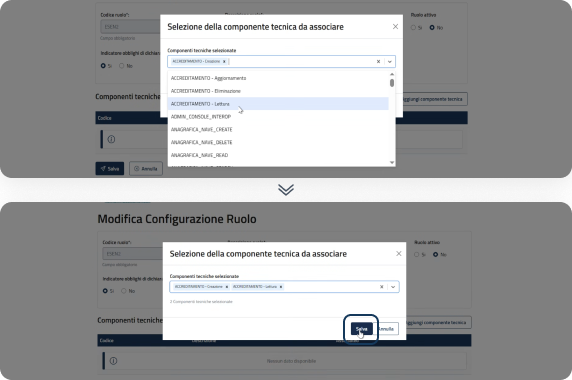
Azioni sulle componenti tecniche
Le componenti tecniche associate saranno visualizzate all'interno del relativo elenco e sarà possibile disassociarle deselezionandole tramite checkbox o eliminarle attraverso l'icona del cestino.
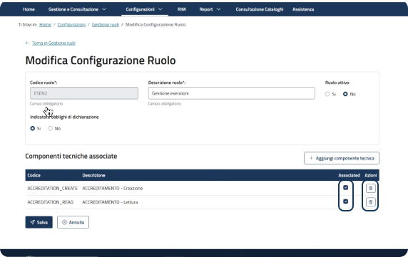
Salvataggio
Per salvare il ruolo con le componenti tecniche associate cliccare il pulsante "Salva". Se l'utente clicca il pulsante "Annulla", verranno annullate le modifiche apportate.
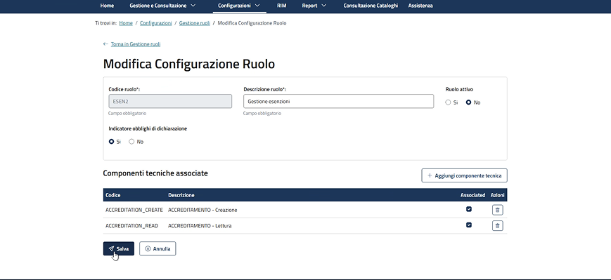
Azioni disponibili sulle competenze tecniche
Il sistema mostra una finestra di conferma. Cliccare il pulsante "Conferma" per confermare le modifiche apportate alla configurazione.
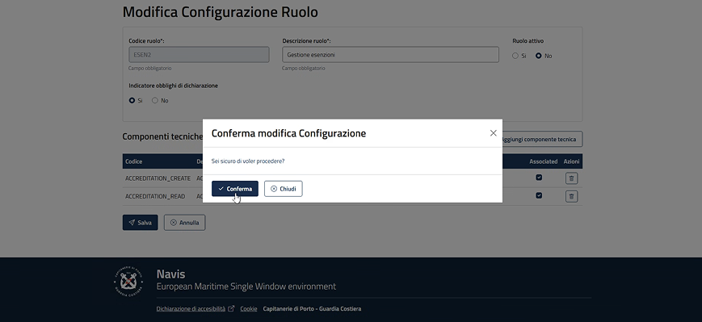
02.
Modifica configurazione Ruolo
Una panoramica sulla modifica configurazione dei ruoli.
Punto di Accesso alla modifica configurazione Ruolo
Attivazione "Modifica" dall'elenco risultati di ricerca
Nell'elenco risultati dei ruoli è possibile accedere al dettaglio in modalità modifica cliccando sull'"icona della matita".
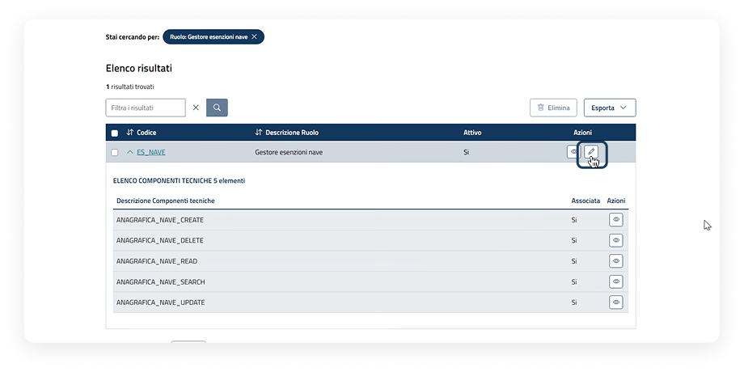
Attivazione Modifica da pagina di dettaglio del Ruolo
Nell'elenco risultati dei ruoli è possibile accedere al dettaglio in modalità visualizzazione cliccando sull'"icona dell'occhio". All'interno del dettaglio, per procedere con la modifica sarà necessario cliccare sul pulsante "Modifica".
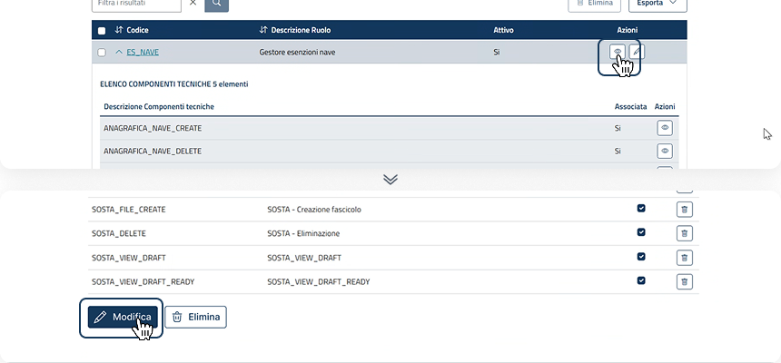
Passaggi per modificare la configurazione ruolo
Dopo aver creato il ruolo procedi con la modifica, seguendo i passaggi indicati:
Modifica informazioni
Il codice ruolo non è modificabile. Eventualmente procedere con l'aggiornamento delle informazioni, descrizione ruolo, ruolo attivo (Sì o No) e indicare se il ruolo può essere associato a Obblighi di Dichiarazione.
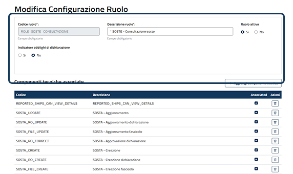
Azioni disponibili sulle competenze tecniche
L'utente ha la possibilità di aggiungere competenze tecniche attraverso l'apposito pulsante, associare o meno la competenza tramite selezione della checkbox e/o eliminare la competenza attraverso il pulsante con l'icona del cestino.
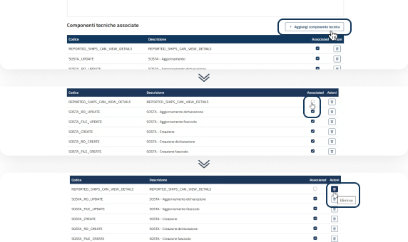
Salvataggio del ruolo
Cliccare il pulsante "Salva" per salvare le modifiche, successivamente il sistema mostra una finestra di conferma della modifica. Cliccare il pulsante "Conferma" per proseguire.
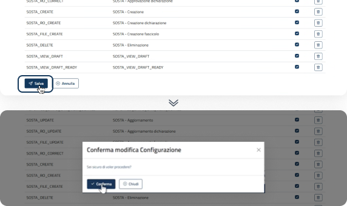
Durante l'aggiunta delle componenti tecniche, all'interno dell'elenco non saranno visibili le componenti tecniche che risultano già associate al ruolo.
03.
Cancellazione ruolo
Una panoramica sulla cancellazione dei ruoli.
Passaggi per cancellare un ruolo da tabella
Dopo aver creato un ruolo, l'utente può eliminarlo tramite i seguenti passaggi:
Cancellazione tramite risultati di ricerca
Nell'elenco risultati della ricerca dei ruoli è possibile procedere con l'eliminazione selezionando uno o più ruoli attraverso la checkbox e successivamente cliccando il pulsante "Elimina".
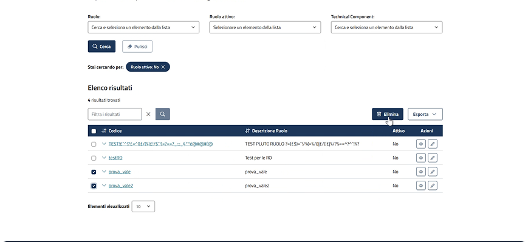
Finestra di conferma eliminazione e successo
Il sistema mostra una finestra in cui l'utente deve confermare di essere sicuro di voler eliminare il ruolo. Cliccare "Elimina" per confermare. Una volta eliminata, non sarà più possibile recuperare i dati eliminati.
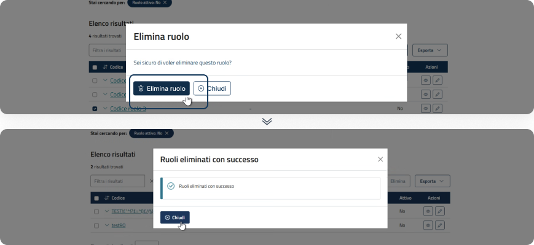
Passaggi per cancellare un ruolo dal dettaglio
Dopo aver creato un ruolo, l'utente può eliminarlo tramite i seguenti passaggi:
Accesso al dettaglio
Nell'elenco risultati della ricerca del ruolo è possibile accedere nel dettaglio del ruolo cliccando l'icona dell'occhio.
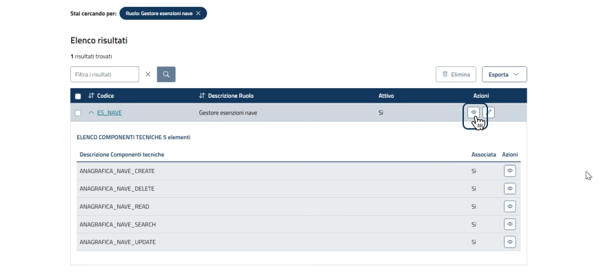
Finestra di conferma eliminazione e successo
Per eliminare cliccare il pulsante "Elimina". Il sistema mostra una finestra in cui l'utente deve confermare di essere sicuro di voler eliminare il ruolo. Cliccare "Elimina" per confermare. Una volta eliminata, non sarà più possibile recuperare i dati eliminati.
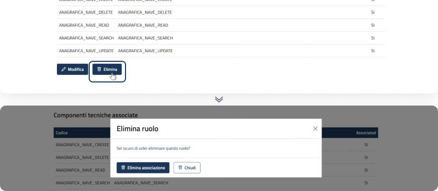
04.
Associazione competenze tecniche a ruolo
Una panoramica sull'associazione competenze tecniche ai ruoli.
Punto di Accesso
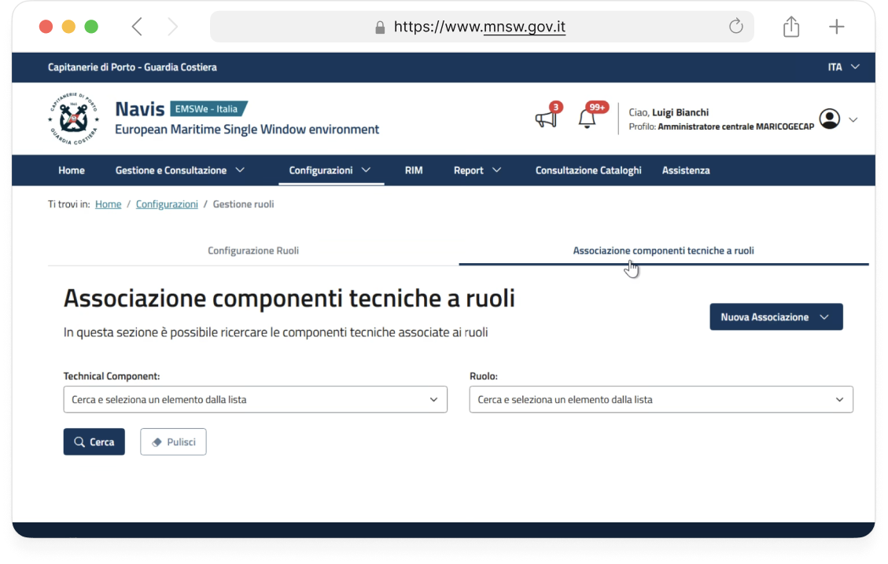
Dopo aver effettuato l'accesso alla pagina "Associazione componenti tecniche a ruoli", cliccare sul pulsante "Nuova Associazione" per avviare il flusso di creazione.
Il sistema darà la possibilità di creare una nuova associazione in maniera manuale o caricando un file.
Passaggi per associare "Manualmente" una nuova competenza tecnica
Dopo aver cliccato il pulsante "Nuova associazione" e selezionato "Manuale", segui tutti i passaggi indicati:
Ricerca e selezione del ruolo
Selezionare il ruolo dal menu a tendina.
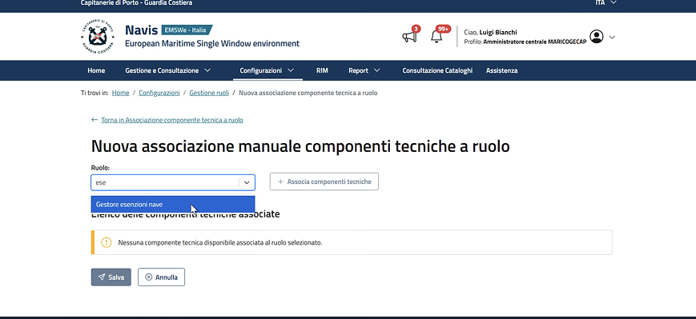
Aggiungi componente tecnica
Dopo aver selezionato il ruolo, il sistema attiva il pulsante "+ Associa componenti tecniche". Per avviare il processo di associazione cliccare il pulsante.
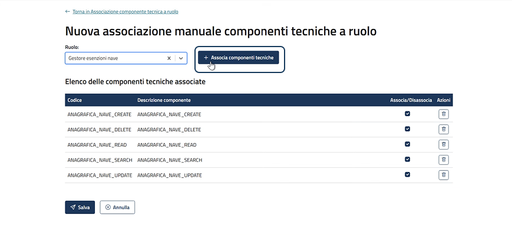
Nel caso in cui al ruolo non risultino associate componenti tecniche, il sistema mostra un'informativa.
Selezione della componente tecnica
Il sistema mostra una finestra in cui è possibile selezionare una o più componenti tecniche da associare al ruolo. Dopo averle selezionate, cliccare il pulsante "Salva" per confermare l'associazione delle componenti tecniche al ruolo.
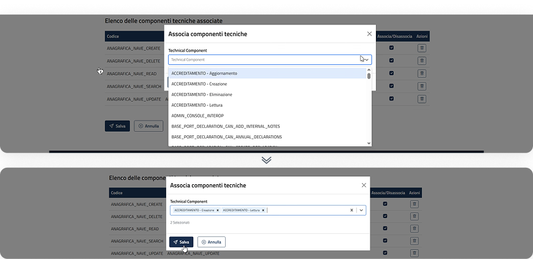
Salva e conferma
Dopo aver cliccato il pulsante "Salva", il sistema mostra una finestra di conferma. Cliccare il pulsante "Conferma" per procedere con il salvataggio.
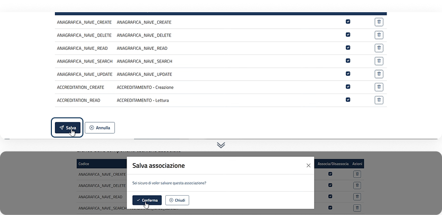
Passaggi per associare "Da file" una nuova competenza tecnica
Dopo aver cliccato il pulsante "Nuova associazione" e selezionato "Da file", segui tutti i passaggi indicati per associare una nuova competenza tecnica "Da File":
Esempio scaricabile e caricamento
Nel caricamento tramite file, il sistema fornisce le indicazioni sulla struttura che il documento deve rispettare e mette a disposizione un tracciato file di esempio scaricabile. Per caricare il documento, cliccare l'apposito pulsante "Carica documento".
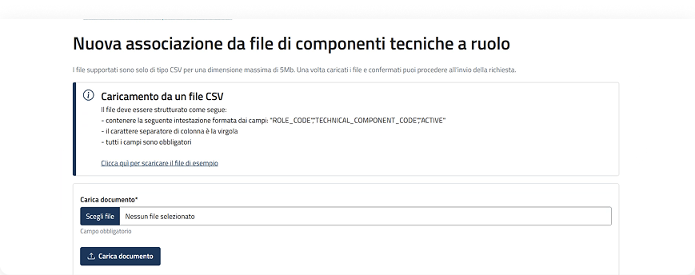
File caricato
Dopo aver cliccato il pulsante "Carica Documento", il sistema mostra un'informativa che comunica all'utente che l'importazione da file è avvenuta con successo.
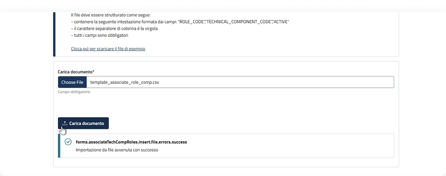
Nel caso in cui ci siano errori nei dati del file caricato, il sistema informa l'utente tramite testi informativi e messaggi di alert, impedendo il proseguimento dell'operazione. Di seguito un esempio:
Importazione da file avvenuta con errori
Importazione avvenuta con errori. Righe totali: 2, elaborate: 0
La riga 1 non è formalmente valida. Errore valore "RL001" nella colonna 1 non è ammesso.
05.
Modifica ruoli associati alla componente tecnica
Una panoramica sulla modifica dei ruoli associati alla componente tecnica.
Passaggi per modificare i ruoli associati alla componente tecnica
Dopo aver associato le componenti tecniche al ruolo, l'utente può procedere con la modifica della stessa seguendo i passaggi indicati:
Dettaglio componente tecnica
Nell'elenco risultati della ricerca dei ruoli, è possibile accedere al dettaglio della componente tecnica associata cliccando l'icona dell'occhio.
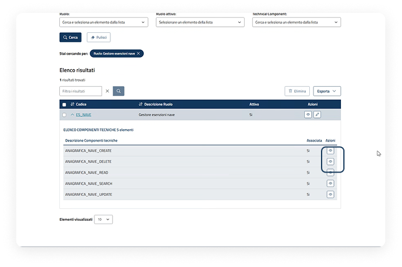
Modifica ruoli associati
Nel dettaglio della componente tecnica, per modificare i ruoli associati, cliccare il tasto "Modifica".
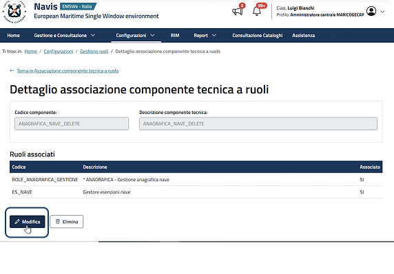
Possibilità di aggiungere ruoli
Dopo aver cliccato il tasto "Modifica", per associare nuovi ruoli alla componente tecnica cliccare il pulsante "Aggiungi Ruoli".
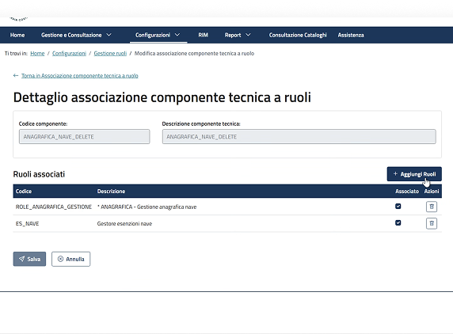
Finestra Aggiungi Ruoli
Il sistema mostra una finestra di selezione dei ruoli da associare alla componente tecnica.
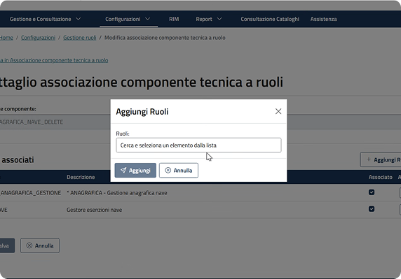
Selezione ruolo
Selezionare uno o più ruoli da associare alla componente tecnica attraverso il menu a tendina.
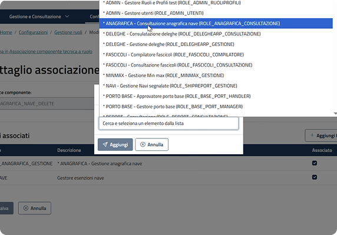
Conferma aggiunta ruoli
Per associare i ruoli selezionati alla componente tecnica, cliccare il tasto "Aggiungi".
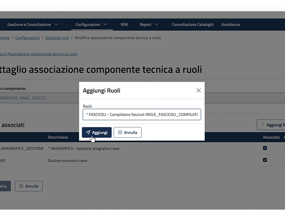
Associazione e eliminazione ruolo
I ruoli associati saranno aggiunti all'elenco "Ruoli associati". È possibile gestire l'associazione attraverso la selezione con checkbox. Per eliminare, cliccare il pulsante con l'icona del cestino.
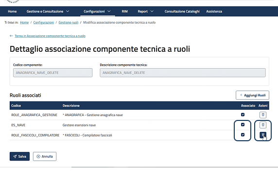
Finestra conferma eliminazione
Il sistema mostra una finestra di conferma dell'eliminazione. Cliccare su "Elimina configurazione" per confermare.
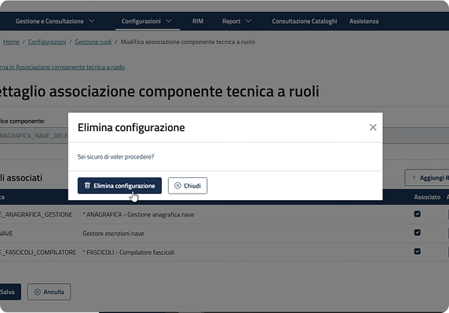
Salvataggio modifica
Per salvare cliccare il pulsante "Salva". Successivamente il sistema mostra una finestra di conferma del salvataggio. Per confermare la modifica cliccare il pulsante "Conferma".
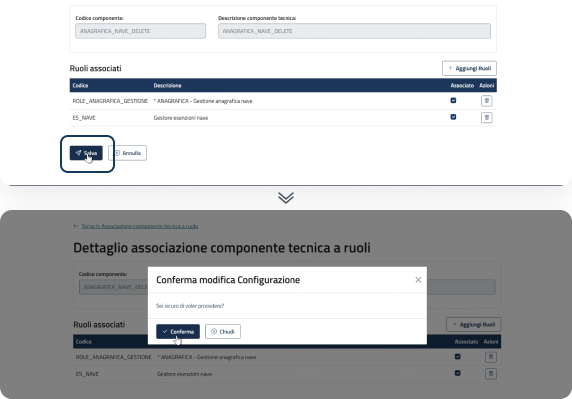
06.
Eliminazione associazione componente tecnica a ruolo
Una panoramica sulla cancellazione della componente tecnica.
Passaggi per cancellare un'associazione di una CT
Dopo aver associato una componente tecnica a uno o più ruoli, l'utente può eliminare l'associazione tramite i seguenti passaggi:
Dettaglio componente tecnica
Nell'elenco risultati della ricerca dei ruoli è possibile accedere al dettaglio della componente tecnica cliccando l'icona dell'occhio.
Eliminazione associazione
Nel dettaglio della componente tecnica, per eliminare l'associazione della componente tecnica al ruolo, cliccare il tasto "Elimina".
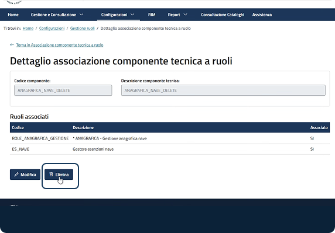
Finestra di conferma eliminazione e successo
Il sistema mostra una finestra in cui l'utente deve confermare di essere sicuro di voler eliminare l'operazione. Una volta eliminata, non sarà più possibile recuperarla.
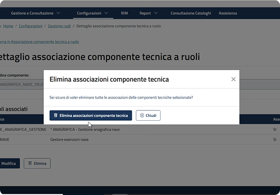
07.
Ricerca e consultazione ruolo
Una panoramica sulla ricerca e consultazione dei ruoli.
Punto di accesso
La voce di menù
Dalla dashboard, è possibile accedere alle principali sezioni tramite le voci di menu.
Menu a tendina
Cliccando sulla voce "Configurazioni" viene visualizzato un menu a tendina, da cui è possibile accedere a "Gestione Ruoli".

Ricerca tra Configurazione ruoli e Associazione componenti tecniche a ruoli
In questa pagina l'utente può effettuare la ricerca per Configurazione Ruoli e Associazione delle componenti tecniche al ruolo.
Configurazione ruoli
Selezionare il seguente tab per ricercare i ruoli presenti nel sistema.
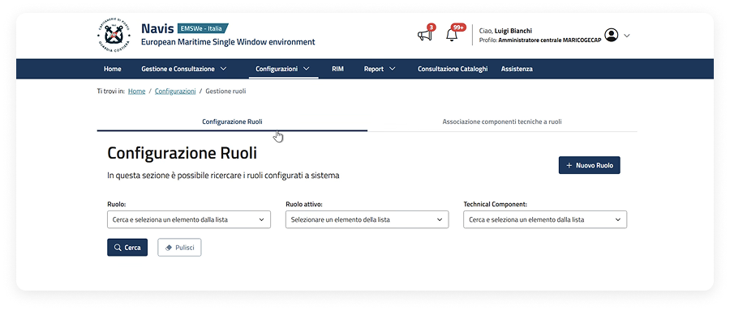
Associazione componenti tecniche a ruoli
Selezionare il seguente tab per ricercare le competenze tecniche associate ai ruoli.
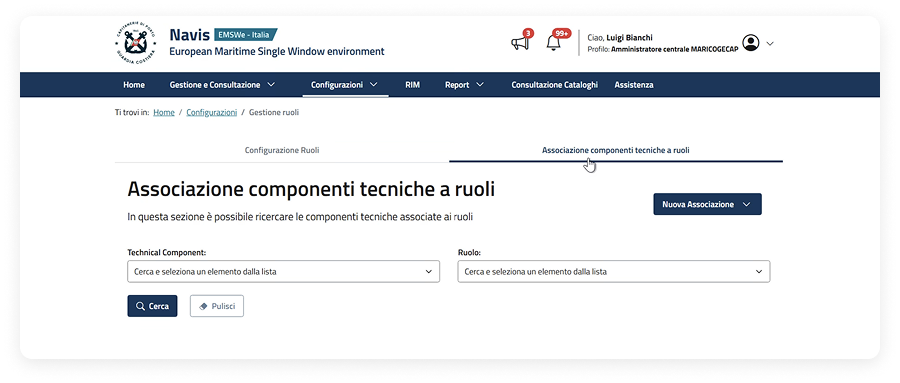
Configurazione ruoli
È possibile avviare subito la ricerca oppure aggiungere dei parametri per rendere i risultati più precisi. La schermata è suddivisa nelle seguenti tre sezioni:
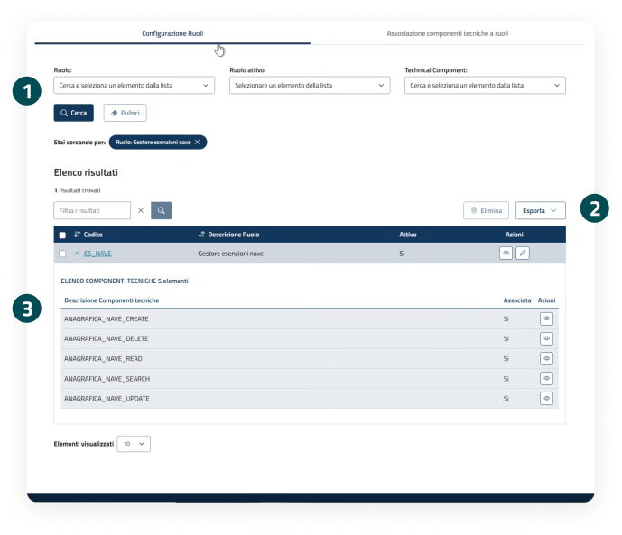
Sezione filtri
La sezione filtri permette di ricercare per Ruolo, Ruolo attivo e Componenti tecniche. Avviare la ricerca attraverso il pulsante "Cerca" e pulire i filtri tramite il pulsante "Pulisci". I filtri applicati sono visualizzati e cancellabili.
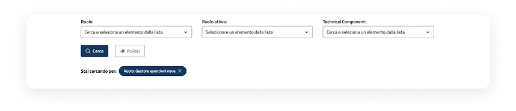
Azioni sulla tabella dei risultati
È possibile esportare i risultati di ricerca attraverso il pulsante "Esporta" e, dopo aver selezionato una o più ruoli, è possibile eliminare tramite il pulsante "Elimina". È possibile filtrare ulteriormente i risultati di ricerca valorizzando il relativo campo.
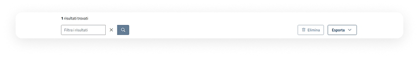
Visualizzazione ruoli e componenti tecniche associate tramite tabella
I risultati della ricerca vengono presentati in una tabella, mostrando le informazioni principali e le azioni disponibili: visualizzazione dettaglio tramite icona dell'occhio e modifica del ruolo tramite icona della matita. L'elenco delle componenti tecniche associate al ruolo è visualizzabile tramite apertura ad accordion.
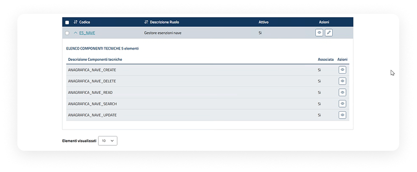
Visualizzazione dettaglio Ruolo
All'interno della pagina sono consultabili le seguenti informazioni:
- Dati ruolo;
- Componenti tecniche associate.
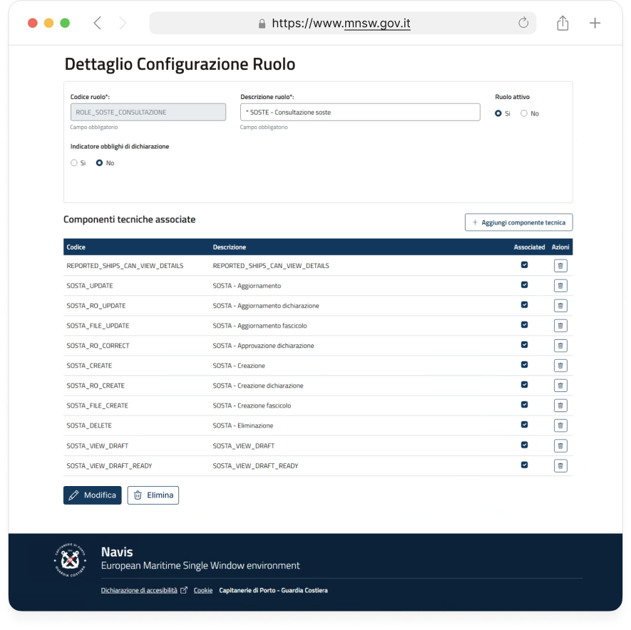
Possibili azioni primarie
"Modifica" per aggiornare il ruolo o "Elimina" per cancellarlo.
Possibili azioni secondarie
È possibile aggiungere componenti tecniche cliccando il pulsante "Aggiungi componente tecnica".
Associazione componenti tecniche a ruoli
È possibile avviare subito la ricerca oppure aggiungere dei parametri per rendere i risultati più precisi. La schermata è suddivisa nelle seguenti tre sezioni:
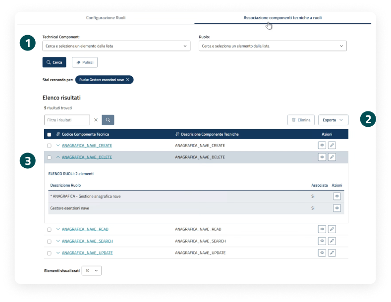
Sezione filtri
La sezione filtri permette di ricercare per Componenti tecniche o Ruoli, avviare la ricerca attraverso il pulsante "Cerca" e pulire i filtri tramite il pulsante "Pulisci". I filtri applicati sono visualizzati e cancellabili.
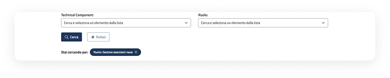
Azioni sulla tabella dei risultati
È possibile esportare i risultati di ricerca attraverso il pulsante "Esporta" e, dopo aver selezionato una o più componenti tecniche, è possibile eliminare tramite il pulsante "Elimina". È possibile filtrare ulteriormente i risultati di ricerca valorizzando il relativo campo.
Visualizzazione componenti tecniche e ruoli associati tramite tabella
I risultati della ricerca vengono presentati in una tabella, mostrando le informazioni principali e le azioni disponibili. L'elenco dei ruoli associati alla componente tecnica è visualizzabile tramite apertura ad accordion.
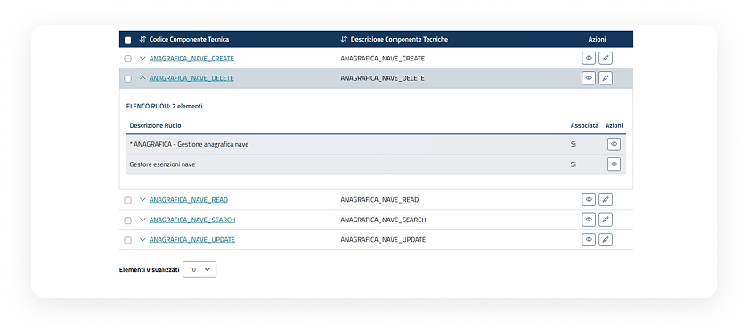
Visualizzazione dettaglio Competenza tecnica
All'interno della pagina sono consultabili le seguenti informazioni:
- Codice componente;
- Descrizione componente tecnica;
- Ruoli associati.
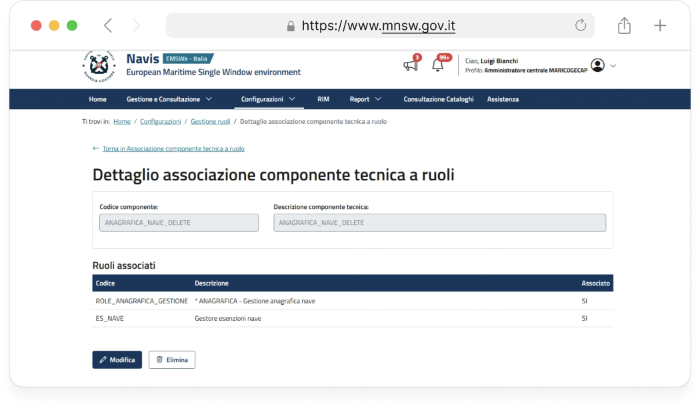
Possibili azioni primarie
"Modifica" per aggiornare l'associazione o "Elimina" per cancellarla.